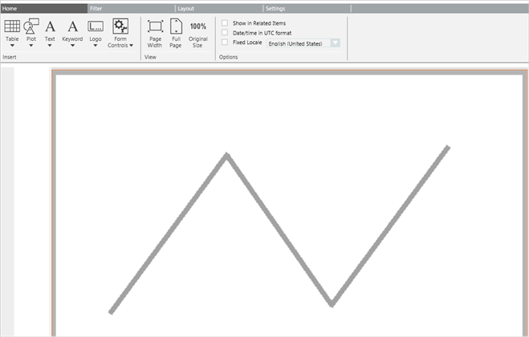
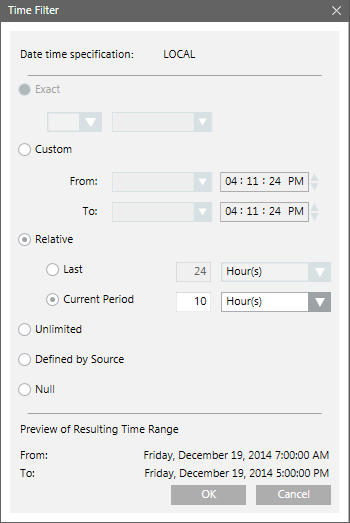
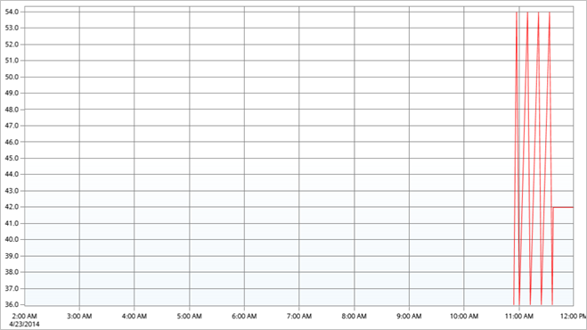

Configuring a Trends Plot
Scenario: You want to track the change of value of an Analog Input object graphically over a period of 10 years using a trends plot.
- You have created a Trend View Definition with the Analog Input object.
- Create a new report definition with a Trends Plot inserted.
- A Trends Plot is inserted in the report definition.

- From System Browser, drag the Trend View Definition to the Trends Plot. This acts as a name filter to the plot.
- Specify the time period by adding a Time filter to the plot. Perform the following steps to add the Time filter:
a. Right-click the Trends Plot, point to Filters and select Time Filter.
b. In the Time Filter dialog box, select the Relative option.
c. Select the Last or Current Period option, depending on the data requirement for the last 10 hours or current 10 hours.
In this case, we will obtain the data for the current 10 hours by selecting Current Period and specifying 10 hours.
d. Click OK. 
- Run the report to view the data.
- The report displays the graphical representation of the data for the current 10 hour period.

- Save the report definition.
NOTE: You can enhance the report configuration at any time, in the future, by changing the Name and Time filters.